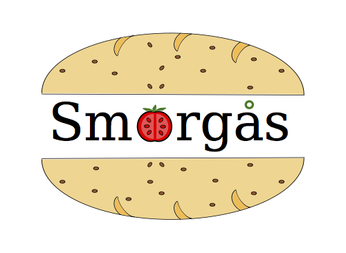

Welcome
to the Smörgås Protein Alignment Web Server.

Please enter your sequences in fasta format (protein or nucleotides):
---------------
---------------
Server is running Smörgås 0.1.0, alignments provided by the Smörgås protein alignment engine.
If you have questions, see also the Question and Answer page.
Smörgås Web Server (c) 2015 by the Grabherr Group at the Department of
Medical Biochemistry and Microbiology Uppsala University, Sweden
With support from the
Science for Life Laboratories and the Bioinformatics Infrastructure for Life Sciences.
Smörgås is available as source code under the LGPL from GitHub.